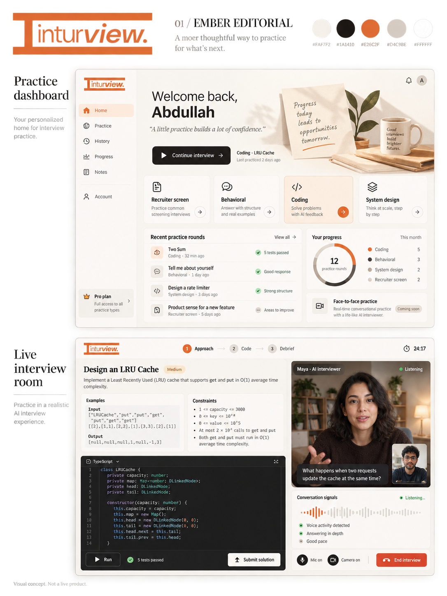

01
Ember Editorial
Warm paper, charcoal, and an ember logo. A sidebar dashboard with generous spacing; the interview room pairs a dark editor with the interviewer on the right.
#FAF7F2#1A1410#E26C2F#D4C9BE#FFFFFF
Open full-size design ↗